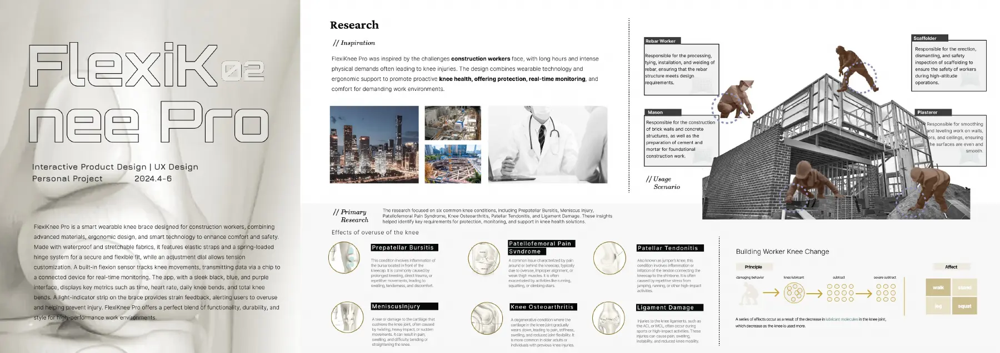
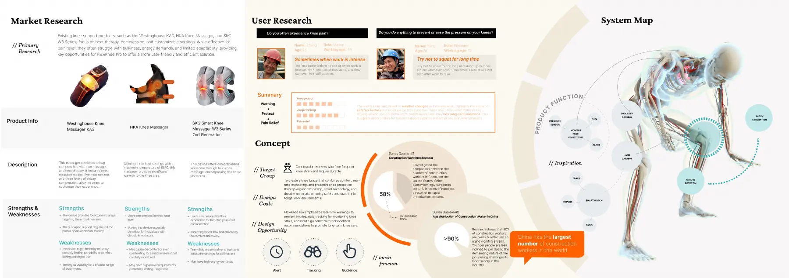
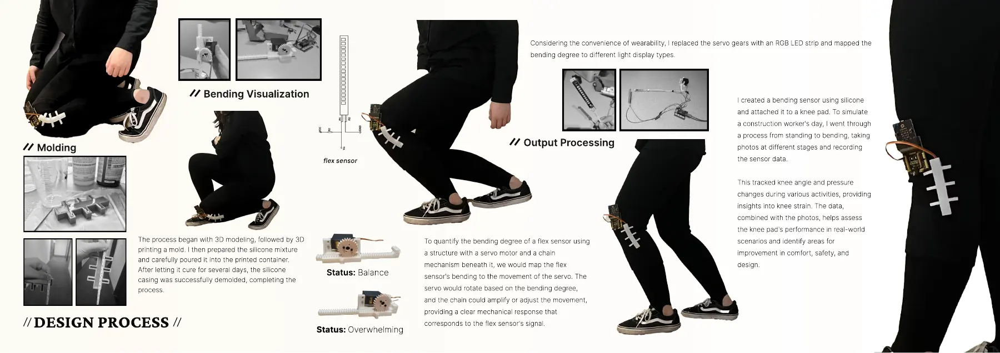
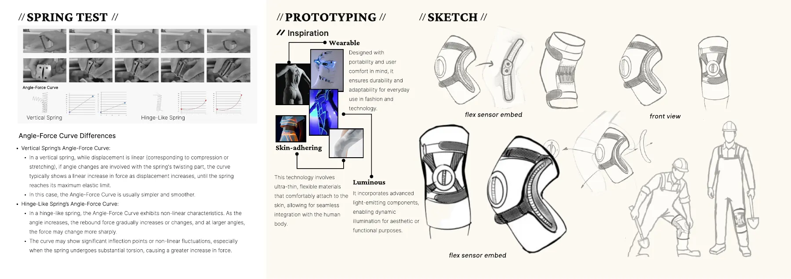
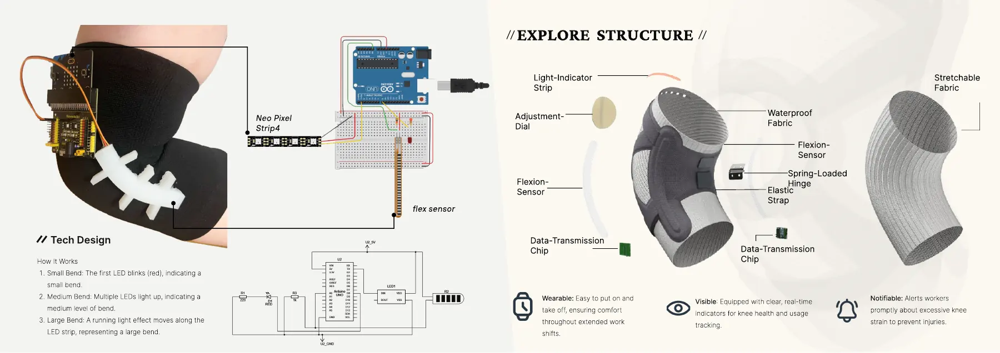
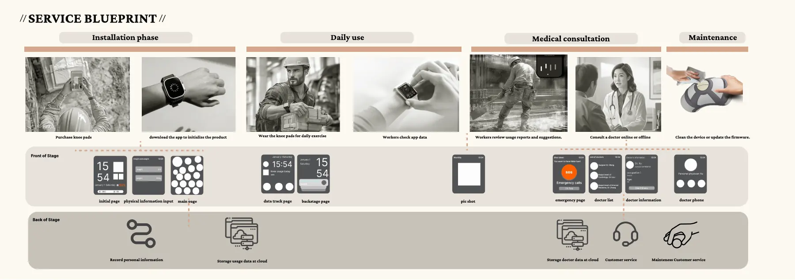

简介
建筑工人的工作需要反复下跪、弯腰。这个项目想探索护膝怎样既能支撑膝盖，又能让佩戴的人看到自己弯了多少。
调研和过程
- 研究了现有的护膝产品和工人的需求，再把整个概念画成系统图。
- 3D 打印模具、浇注硅胶部件，做出弯曲传感器原型。
- 在站立、弯腰、下跪等模拟姿势下测试原型，记录传感器读数并拍照，观察数值怎么变化。
- 一开始用舵机转动来显示弯曲程度，后来考虑到佩戴方便，改成了 RGB 灯带。
我做出了什么
内置传感器和灯带的护膝结构、手机和手表界面概念，以及一张涵盖安装、日常使用、就医咨询和维护的服务蓝图。
结果
一个能工作的传感器加 LED 原型，和一套完整的产品概念。没有在工地或临床上测试过，所以不声称能预防受伤。
作品集页面











